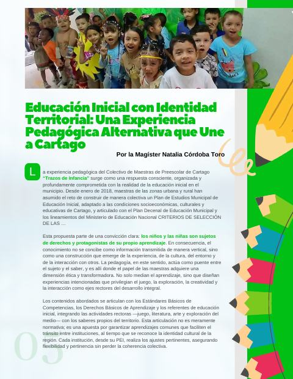
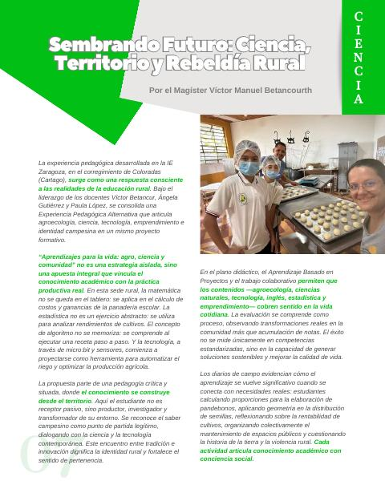
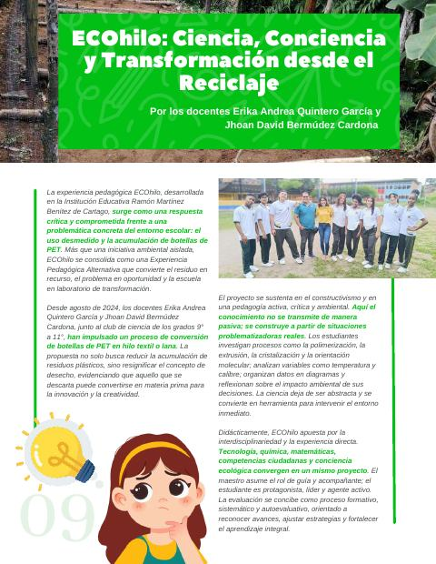
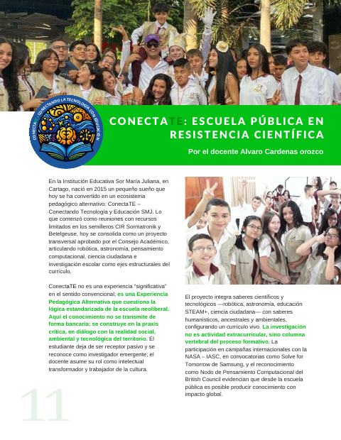
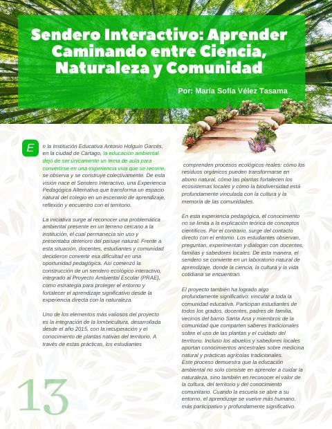
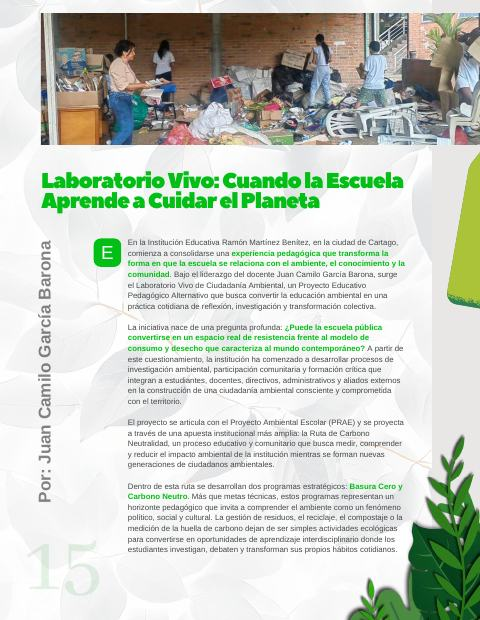

Reconocimiento a las ocho EPA del Norte del Valle para el 3.er Congreso Pedagógico Nacional
En Cali no pasaron los filtros; el CEID Cartago las envió entonces a Bogotá, al CEID de FECODE, que convocaba el Congreso, y FECODE aprobó tres a nivel nacional. No alcanzaron a presentarse; por eso el CEID Cartago quiere que su trabajo se conozca.
- 8EPA curadas por el CEID Cartago para el Congreso
- 3seleccionadas por FECODE a nivel nacional
- 6relatos publicados en «Voces que Transforman»

En 2025, el CEID Cartago fue el curador de la Zona Norte del Valle para el 3.er Congreso Pedagógico Nacional de FECODE. Acompañó a cada docente a escribir y sistematizar su experiencia, y presentó ocho experiencias pedagógicas alternativas (EPA). El CEID Cartago las envió a Cali, donde no pasaron los filtros. Entonces envió las ocho a Bogotá, al CEID de FECODE, que convocaba el Congreso, y FECODE aprobó tres de ellas a nivel nacional: Trazos de Infancia, ECOhilo y ConectaTE. Por razones de tiempo, no alcanzaron a presentarse como ponencias en el Congreso.
Que no hayan llegado al escenario no cambia lo que son. Este reconocimiento es para ellas y para las maestras y los maestros que las sostienen.
Un camino exigente
Las experiencias se revisaron con los criterios de la convocatoria (Circular 66 de 2025): su conceptualización y su enfoque pedagógico, epistemológico y metodológico. Se dio prioridad a las propuestas que fortalecen la autonomía escolar, la construcción colectiva del conocimiento y el carácter profesional del magisterio. El CEID Cartago las entregó a la dirección del CEID del SUTEV el 3 de septiembre de 2025.
Detrás de cada una hay un trabajo que casi nunca se ve: sistematizar la experiencia, escribirla, revisarla con los criterios y sostenerla como saber pedagógico propio.
Las experiencias
Seis de las ocho se pueden leer completas en el primer fascículo de «Voces que Transforman» (marzo de 2026), la revista que nació para honrarlas.
Trazos de Infancia Seleccionada por FECODE
Colectivo de Maestras de Preescolar de Cartago. Relato de Natalia Córdoba Toro. Desde enero de 2018, maestras de preescolar de las zonas urbana y rural construyen juntas un Plan de Estudios Municipal de Educación Inicial con identidad territorial. Parten de que los niños y las niñas son sujetos de derechos y protagonistas de su aprendizaje, y ponen en el centro el juego, la exploración y la creatividad. Muestran que un currículo también se puede escribir en colectivo, desde el municipio. Leer el relato →
Aprendizajes para la vida: agro, ciencia y comunidad
I. E. Zaragoza, corregimiento de Coloradas (Cartago). Víctor Manuel Betancur, Ángela Gutiérrez y Paula López. En esta sede rural, la matemática se aplica en los costos de la panadería escolar, la estadística en el rendimiento de los cultivos y la tecnología, con micro:bit y sensores, empieza a automatizar el riego. El saber campesino es el punto de partida y dialoga con la ciencia. La escuela rural aparece como lo que es: un lugar donde se produce conocimiento. Leer el relato →
ECOhilo Seleccionada por FECODE
I. E. Ramón Martínez Benítez (Cartago). Erika Andrea Quintero García y Jhoan David Bermúdez Cardona. Desde agosto de 2024, con el club de ciencia de los grados 9.º a 11.º, convierten botellas de PET en hilo textil. Los estudiantes investigan la polimerización, la extrusión y la cristalización, y miden variables como la temperatura y el calibre. El residuo se vuelve materia prima, y la química, una respuesta a un problema de su propio colegio. Leer el relato →
ConectaTE Seleccionada por FECODE
I. E. Sor María Juliana (Cartago). Alvaro Cardenas Orozco. Nació en 2015 en los semilleros CIR Sormatronik y Betelgeuse, y hoy es un proyecto transversal aprobado por el Consejo Académico, que articula robótica, astronomía, pensamiento computacional, ciencia ciudadana e investigación escolar. Sus campañas con la NASA y el IASC, su paso por Solve for Tomorrow de Samsung y su reconocimiento como Nodo de Pensamiento Computacional del British Council muestran que desde la escuela pública se produce conocimiento con alcance global. Leer el relato →
Sendero interactivo
I. E. Antonio Holguín Garcés (Cartago). Relato de María Sofía Vélez Tasama. Un terreno sin uso junto al colegio se convirtió en un sendero ecológico integrado al Proyecto Ambiental Escolar (PRAE). Allí se unen la lombricultura, que la institución trabaja desde 2015, y la recuperación de plantas nativas. Docentes, estudiantes y comunidad aprenden recorriendo el territorio que cuidan. Leer el relato →
Laboratorio Vivo de Ciudadanía Ambiental
I. E. Ramón Martínez Benítez (Cartago). Juan Camilo García Barona. Parte de una pregunta: si la escuela pública puede ser un espacio de resistencia frente al modelo de consumo y desecho. Articulado al PRAE, avanza en la Ruta de Carbono Neutralidad con dos programas, Basura Cero y Carbono Neutro, y vincula a estudiantes, docentes, directivos, administrativos y aliados externos. Leer el relato →
Dos experiencias más
Las otras dos EPA de la curaduría aún no tienen relato publicado. Se sumarán a esta página cuando sus autores lo autoricen.
Por qué importan
- Son conocimiento pedagógico hecho en el territorio. Ninguna aplica un modelo traído de afuera: cada una parte de un problema real de su escuela (el plástico acumulado, un terreno abandonado, el currículo del preescolar, la producción del campo) y lo convierte en aprendizaje.
- Muestran al maestro como intelectual. Sus autores investigan su práctica, la escriben y la someten a revisión. Eso es lo que defiende el Movimiento Pedagógico: el carácter profesional del magisterio.
- Responden a los problemas de este tiempo. Tres trabajan el cuidado del ambiente desde la escuela, tres unen ciencia, tecnología y comunidad, y una construye currículo en colectivo para todo un municipio.
Lo que sigue
El Estatuto del SUTEV le pide al CEID un evento anual en el que los docentes presenten sus proyectos y un reconocimiento anual a quienes se destacan (art. 52, literal p y parágrafo 3). Estas ocho experiencias son el punto de partida: la revista ya publicó seis, el Foro Municipal de EPA se prepara como tributo a sus autores, y el apartado Maestras y maestros que transforman reunirá, con su autorización, a los docentes reconocidos.
Nuestro reconocimiento
El CEID Cartago reconoce a Natalia Córdoba Toro y al Colectivo de Maestras de Preescolar de Cartago; a Víctor Manuel Betancur, Ángela Gutiérrez y Paula López; a Erika Andrea Quintero García y Jhoan David Bermúdez Cardona; a María Sofía Vélez Tasama; a Juan Camilo García Barona, y a los autores de las dos experiencias que completan la curaduría. Gracias por escribir lo que hacen en el aula y por demostrar que en el Norte del Valle se produce pensamiento pedagógico.
Léelas en la revista
6 relatos
Pág. 5 · 2 págs.Educación inicial con identidad territorial: una experiencia pedagógica alternativa que une a CartagoNatalia Córdoba ToroCómo maestras de preescolar unieron esfuerzos para transformar la educación inicial desde la identidad territorial y la construcción colectiva.Leer el artículo →
Pág. 7 · 2 págs.Sembrando futuro: ciencia, territorio y rebeldía ruralVíctor Manuel BetancurCómo una escuela rural transforma el aprendizaje al integrar agro, ciencia y tecnología para dignificar el territorio y proyectar futuro.Leer el artículo →
Pág. 9 · 2 págs.ECOhilo: ciencia, conciencia y transformación desde el reciclajeErika Andrea Quintero García y Jhoan David Bermúdez CardonaCómo estudiantes convierten residuos plásticos en innovación científica, con conciencia ambiental, liderazgo juvenil y transformación sostenible desde la escuela.Leer el artículo →
Pág. 11 · 2 págs.ConectaTE: escuela pública en resistencia científicaAlvaro Cardenas OrozcoCómo una escuela pública convirtió la ciencia y la tecnología en herramientas de emancipación.Leer el artículo →
Pág. 13 · 2 págs.Sendero interactivo: aprender caminando entre ciencia, naturaleza y comunidadMaría Sofía Vélez TasamaUn sendero donde la ciencia, la cultura y la naturaleza se encuentran para enseñar a cuidar el territorio y la vida.Leer el artículo →
Pág. 15 · 3 págs.Laboratorio vivo: cuando la escuela aprende a cuidar el planetaJuan Camilo García BaronaCómo una escuela transforma el aprendizaje en acción ambiental y demuestra que educar también es aprender a cuidar el planeta.Leer el artículo →